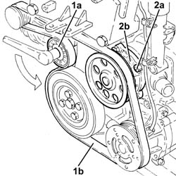
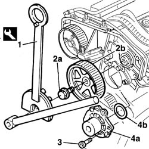
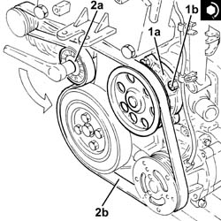

1088C20 water pump - r + r with engine removed
- Path
- Procedures > 10 ENGINE > 1088 ENGINE COOLING > 1088C WATER PUMP AND THERMOSTAT > 1088C20 water pump - r + r with engine removed
- Kind
- repair procedure (removal / refitting; the operation number is the code)
- Applies to
- all engines; all production periods
- Interactive page
- https://sloeber94.github.io/elrnDB-fDbl/en/#/2585309
Applies to: all engines; all production periods
 Removing
Removing
 Refitting
Refitting1. Use a spanner on the moving tensioner (1a) and remove the engine components single drive belt (1b).
2. Undo the nuts (2a) and remove the water pump (2b) complete with gasket.

Applies to: all engines; all production periods
Removing
Refitting1004D40 engine - position on stand and remove
1032B16 toothed timing belt - r r with engine removed
1. Use the tool to prevent the pulley from turning.
2. Unscrew retaining bolt (2a) and remove pulley (2b) from its seat on the camshaft.
 | Name | Country |
|---|---|---|
1 | Support for counter-torque | 1.860.831.000 |
| Name | Country |
|---|---|---|
1 | Support for counter-torque | 1.860.831.000 |
3. Unscrew the retaining bolts
4. Remove coolant pump (4a) with its underlying O-ring (4b).

Applies to: all engines; all production periods
Refitting
Removing1. Place the water pump (1a), complete with gasket, back in its housing and secure it tightening the bolts (1b) to the recommended torque.
 | Fastening | Component | Ø | Value (daNm) |
|---|---|---|---|---|
1b | Nut | COOLANT PUMP | M6 | (Upper engine crankcase side) 0.8 ÷ 1.0 |
2. Use a spanner on the moving tensioner (2a) and fit the single drive belt (2b).

Applies to: all engines; all production periods
Refitting
RemovingReplace the O-ring before fitting the coolant pump.
Fit the coolant pump and tighten the bolts to torque.
| Fastening | Component | Ø | Value (daNm) |
|---|---|---|---|---|
- | Bolt | COOLANT PUMP | M8 | 2.5 |
Fit the pulley into its seat on the camshaft.
Tighten the bolt and lock the pulley using the tool. Then tighten the pulley bolt to torque.
| Name | Country |
|---|---|---|
- | Support for counter-torque | 1.860.831.000 |
| Name | Country |
|---|---|---|
- | Support for counter-torque | 1.860.831.000 |
| Fastening | Component | Ø | Value (daNm) |
|---|---|---|---|---|
- | Bolt | TIMING GEAR DRIVEN PULLEYS | M12 | 12 |